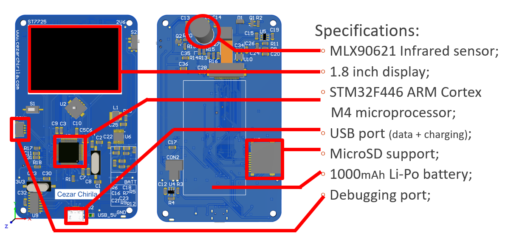
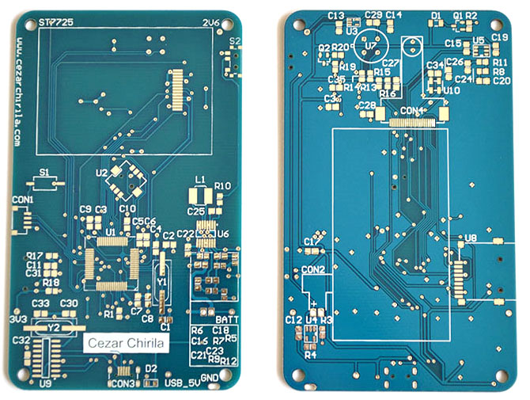

The Thermal Imaging Camera is my diploma project which was necessary to get my Engineer Diploma (BSc). I got the idea for the project whilst working at Continental where I found that using a TIC (Thermal Imaging Camera) is fast and useful for hardware debugging, especially for power electronics.
I was given the MLX90621 sensor (actually 2 pcs) by Melaxis as samples for being a student, for which I am very grateful. Therefore, the development begun. After careful consideration, I chose the components and the resulting specifications of the device can be seen below: 
One thing that I have omitted from the specifications is the VGA CMOS Camera Sensor, which can be seen in the rendered picture above. Unfortunately, due to time constraints I did not have time to finish implementing this in software, but it is functional from a hardware standpoint (with proper power supplies and clock input). Otherwise, the device is fully functional. At the end of this page there is a video where you can see it working.
I have designed the PCB in Altium as I have never used it before and wanted to familiarise myself with it as it is seen as a professional tool. Below you can the unpopulated and the populated PCB. I've had them made at Elecrow and they turned out pretty great. I soldered them by hand.
I have implemented several features for this camera:
If you want to read my whole thesis based on this project I would 1. Be pleasantly surprised 2. Totally send you a copy. Use the contact form for more details, I usually try to reply as fast as possible. Finally, you can see a video of the device below: